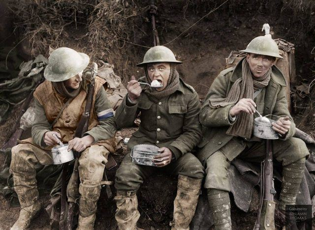
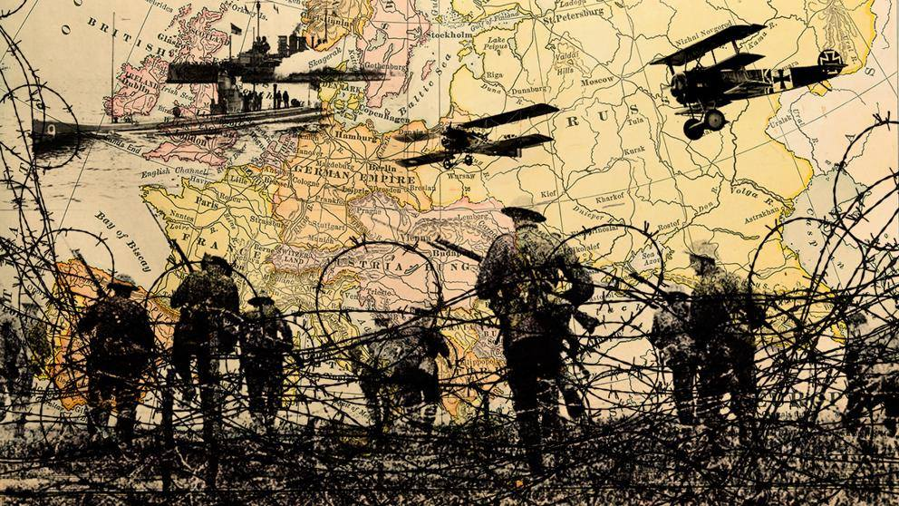

 Guerra Mundial, Primera, conflicto militar (1914-1918) que comenzó como un enfrentamiento localizado en el Imperio Austro-Húngaro y Serbia el 28 de julio de 1914; se transformó en un enfrentamiento armado a escala europea cuando la declaración de guerra austro-húngara se extendió a Rusia el 1 de agosto de 1914; finalmente, pasó a ser una guerra mundial en la que participaron 32 naciones. Veintiocho de ellas, denominadas 'aliadas' o 'potencias asociadas' y entre las que se encontraban Gran Bretaña, Francia, Rusia, Italia y Estados Unidos, lucharon contra la coalición de los llamados Imperios Centrales, integrada por Alemania, Austria-Hungría, Imperio otomano y Bulgaria. La causa inmediata del inicio de las hostilidades entre Austria-Hungría y Serbia fue el asesinato del archiduque Francisco Fernando de Habsburgo, heredero del trono austro-húngaro, cometido en Sarajevo (Bosnia, entonces parte del Imperio Austro-Húngaro; en la actualidad Bosnia-Herzegovina) el 28 de junio de 1914 por Gavrilo Princip, un nacionalista serbio. No obstante, las causas profundas del conflicto remiten a la historia europea del siglo XIX, concretamente a las tendencias económicas y políticas que imperaron en el Europa desde 1871, año en el fue fundado el II Imperio Alemán, y este Estado emergió como gran potencia. La Revolución Francesa y las Guerras Napoleónicas habían difundido por la mayor parte del continente europeo el concepto de democracia, extendiéndose así la idea de que las poblaciones que compartían un origen étnico, una lengua y unos mismos ideales políticos tenían derecho a formar estados independientes. Sin embargo, el principio de la autodeterminación nacional fue totalmente ignorado por las fuerzas dinásticas y reaccionarias que decidieron el destino de los asuntos europeos en el Congreso de Viena (1815). Muchos de los pueblos que deseaban su autonomía quedaron sometidos a dinastías locales o a otras naciones. Por ejemplo, los estados alemanes, integrados en la Confederación Germánica, quedaron divididos en numerosos ducados, principados y reinos.
 LA TRIPLE ALIANZA:El asesinato del archiduque Francisco Fernando, heredero del Imperio Austro-Húngaro, desencadenó el conflicto bélico en junio de 1914. Austria-Hungría fue la primera potencia en declarar la guerra y se convirtió en un pilar fundamental de la Triple Alianza.
Sin embargo, los continuos combates contra Rusia, Serbia, Rumanía e Italia, el desgaste de la guerra y las revueltas internas provocaron la desaparición del imperio en 1918.
El mayor apoyo a los austriacos fue el Kaiser Guillermo II, líder del Imperio Alemán. Alemania estaba enemistada con Francia desde la Guerra Franco-Prusiana (1870-1871) y este nuevo conflicto ofrecía la oportunidad de atacar e invadir al antiguo enemigo.
El primer paso del Kaiser fue la conquista de Bélgica. Como consecuencia el Reino Unido, hasta entonces neutral, le declaró la guerra a Alemania.
LA TRIPLE ENTENTE:El Archiduque Francisco Fernando fue asesinado por un nacionalista de Serbia (un territorio que quería independizarse del Imperio Austro-Húngaro). Por eso, Austria-Hungría declaró la guerra a Serbia.
Rusia enseguida ofreció apoyo a Serbia, aunque lo hizo por sus propios intereses. Los rusos querían imponer su dominio en los territorios de Prusia Oriental y Galitzia, que formaban parte del Imperio Austro-Húngaro.
Así, el Zar de Rusia se involucró en la Gran Guerra desde el principio. Pero la falta de preparación provocó la muerte de millones de soldados rusos, la escasez de recursos y la pobreza entre la población. La crisis interna del país desembocó en la Revolución de 1917.
Francia también entró en la guerra desde el principio. Su objetivo era demostrar que todavía era una de las principales potencias europeas y recuperar los territorios de Alsacia y Lorena, en manos de los alemanes desde la Guerra Franco-Prusiana. El Reino Unido era la principal potencia marítima del mundo en aquella época. Sin embargo, se mantuvo neutral hasta que sus intereses se vieron comprometidos con la invasión de Bélgica por parte de los alemanes.